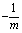
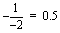
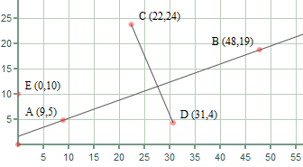
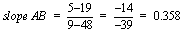
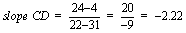
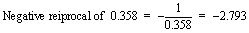
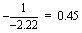

Fig 1. Lines are still perpendicular

When two lines are perpendicular to each other (at right angles or 90°), their slopes have a particular relationship to each other. If the slope of one line is m then the slope of the other line is the negative reciprocal of m, or
So for example in the figure above, the line AB has a slope of 0.5, meaning it goes up by a half for every one across. The line CD if it is perpendicular to AB has a slope of -1/0.5 or -2. Adjust points C or D to make CD perpendicular to AB and verify this result.
Remember that the equation works both ways, so it doesn't matter which line you start with. In the figure above the slope of CD is -2. So the slope of AB when perpendicular is

Note too that the lines to do not have to intersect to be perpendicular. In Fig 1, the two lines are perpendicular to each other even though they do not touch. The slope relationship still holds.

In Fig 1, the line AB and a line segment CD appear to be at right angles to each other. Determine if this is true.
To do this, we find the slope of each line and then check to see if one slope is the negative reciprocal of the other.


If the lines are perpendicular, each will be the negative reciprocal of the other. It doesn't matter which line we start with, so we will pick AB:

So, the slope of CD is -2.22, and the negative reciprocal of the slope of AB is -2.79. These are not the same, so the lines are not perpendicular, even though they look it. If you look carefully at the diagram, you can see that the point C is a little too far to the left for the lines to be perpendicular.
In Fig 1, find a line through the point E that is perpendicular to CD.
The point E is on the y-axis and so is the y-intercept of the desired line. Once we know the slope of the line, we can express it using its equation in slope-intercept form y=mx+b, where m is the slope and b is the y-intercept.
First find the slope of the line CD:

The intercept is 10, the point where the line will cross the y-axis. Substituting these values into the equation, the line we need is described by the equation
This is one of the ways a line can be defined and so we have solved the problem. If we wanted to plot the line, we would find another point on the line using the equation and then draw the line through that point and the intercept. For more on this see Equation of a Line (slope - intercept form)
In the interest of clarity in the applet above, the coordinates are rounded off to integers and the lengths rounded to one decimal place. This can cause calculatioons to be slightly off.
For more see Teaching Notes